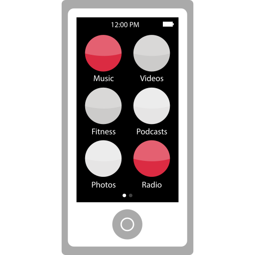
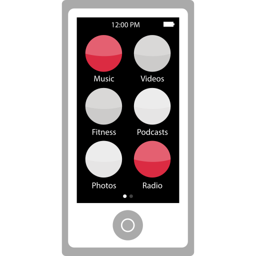
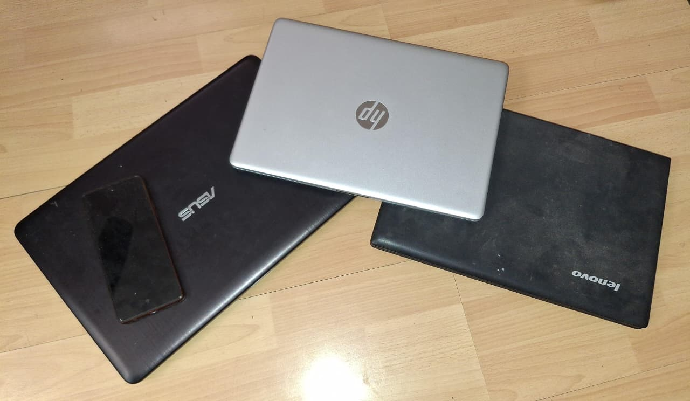
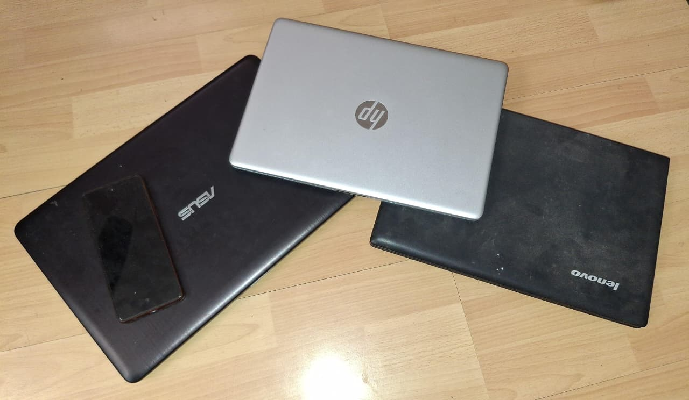
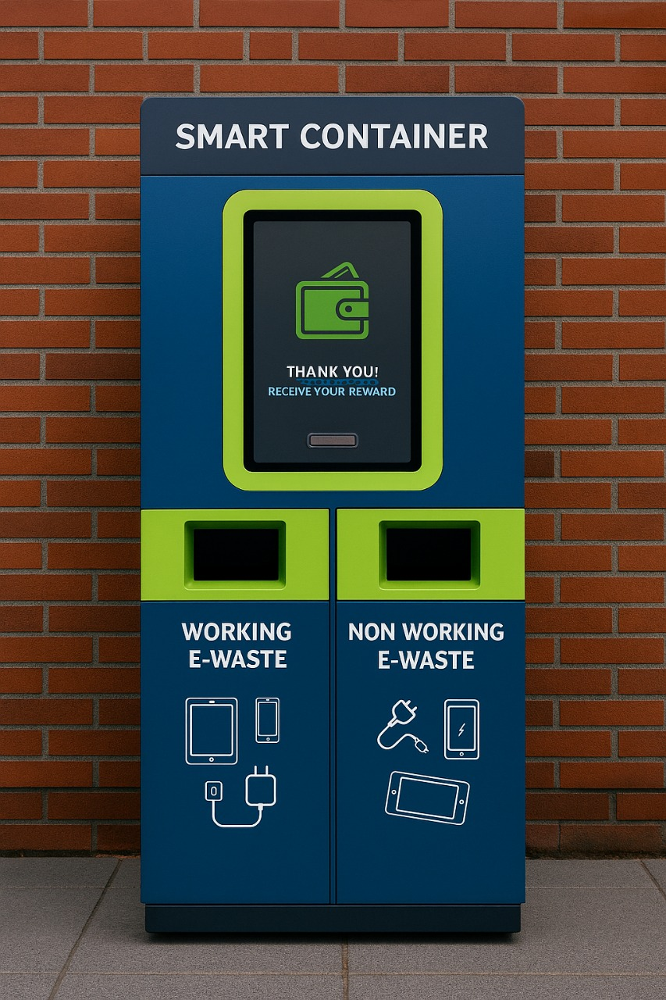

Acumulación de
Residuos Tecnológicos
Un análisis de la problemática en hogares e instituciones educativas y una propuesta de solución desde la ingeniería.
Trabajo final para la cátedra de Introducción a la Ingeniería de Sistemas y Computación
Grupo 02 Nocturno conformado
por los estudiantes:
- Ángeles Rondón
- Breynner Henao
- Ruben Salas
- Sebastian Quinceno
Y hablaremos sobre
Acumulación de Residuos Tecnológicos en hogares e instituciones educativas
Video de presentación
Video de explicación
¿Cuál es el Problema?
El problema central es la acumulación excesiva y descontrolada de RAEE (computadores, celulares, etc.) en desuso. Esto no es solo un problema de espacio; genera graves riesgos ambientales y un enorme desperdicio de recursos valiosos.
Riesgo: Contaminación
Los RAEE contienen materiales tóxicos como mercurio, plomo y cadmio. Cuando se desechan incorrectamente en la basura común, estos elementos se liberan, contaminando el suelo y las fuentes de agua, afectando la salud de los ecosistemas y las personas.
Problema: Desperdicio
Estos dispositivos también contienen materiales valiosos como oro, plata, cobre y coltán. Al no ser recuperados, esta materia prima se "entierra" en vertederos, aumentando la necesidad de minería extractiva, que es costosa y contaminante.
Causas Raíz
- Obsolescencia: Programada y percibida, los equipos se vuelven "viejos" rápidamente.
- Desinformación: El público no sabe qué hacer con los equipos o desconoce los riesgos.
- Falta de Canales: No hay puntos de recolección fáciles, accesibles y confiables.
- Privacidad: Temor a que la información personal de los dispositivos sea recuperada.
El Impacto en Cifras
La magnitud del problema es global y crece cada año. Los datos de organismos internacionales, como la ONU, muestran una realidad alarmante sobre la generación y gestión de la basura tecnológica.
Visualización: Gestión Global de RAEE
Este gráfico ilustra la desproporción entre los residuos generados y los que reciben un tratamiento adecuado. La gran mayoría se pierde, contaminando o desperdiciándose.
Método del Ingeniero
Identificatión del problema

Los residuos eléctricos y electrónicos son todos aquellos equipos que usamos en nuestro diaria vivir actualmente y funcionan mediante corriente eléctrica o campos electromagnéticos y, que realizan un sinnúmero de funciones determinadas.
Así mismo, todos estos equipos se van modernizando con el tiempo y los que antes eran novedosos pasan a ser totalmente obsoletos, olvidados y desechados, volviéndose así residuos.
Este tipo de residuos están compuestos por elementos sumamente peligrosos, que al diluirse en el aire afectan la capa de ozono e incrementan el calentamiento global, siendo esta una gran amenaza para el ser humano.
Además, el simple hecho de la combinación de sustancias provenientes de esta basura afecta la salud del ser humano, y esto debido a la mala gestión de dichos residuos.
Una vez identificado el problema, ¿que información es necesaria para atacarlo?
Recolección de la información necesaria
¿Como afecta este problema a las personas e instituciones educativas?
Nuestra investigación se baso principalmente en como las personas manejan estos residuos en su día a día, además de investigar como esta problematica afecta mundialmente. Encontramos que la mayoría de las personas prefieren conservar telefonos defectuosos, computadores portátiles o de mesa, electrodomesticos, etc., antes de desecharlos. Esto se debe a que no existen depositos de desechos electronicos donde depositarlos, además de que muchas veces prefieren conservarlos antes de desecharlos.
Otro aspecto importante a tener en cuenta es como muchas personas prefieren guardar muchos de estos aparatos electronicos ya que piensan reparalos, pero en muchos casos los años pasan y no son reparados, quedando olvidados en casa. Esto puede un factor de contaminación grave ya que al no ser almacenado en un lugar adecuado puede conllevar a consecuencias en el medio ambiente. Al tener todo nuestro material recolectado empezamos con todas las ideas de como se puede atacar esta problematica
 

Nuestra investigación se baso principalmente en como las personas manejan estos residuos en su día a día, además de investigar como esta problematica afecta mundialmente. Encontramos que la mayoría de las personas prefieren conservar telefonos defectuosos, computadores portátiles o de mesa, electrodomesticos, etc., antes de desecharlos. Esto se debe a que no existen depositos de desechos electronicos donde depositarlos, además de que muchas veces prefieren conservarlos antes de desecharlos.
Otro aspecto importante a tener en cuenta es como muchas personas prefieren guardar muchos de estos aparatos electronicos ya que piensan reparalos, pero en muchos casos los años pasan y no son reparados, quedando olvidados en casa. Esto puede un factor de contaminación grave ya que al no ser almacenado en un lugar adecuado puede conllevar a consecuencias en el medio ambiente.
Al tener todo nuestro material recolectado empezamos con todas las ideas de como se puede atacar esta problematica
Búsqueda de soluciones creativas
Muchas fueron las ideas que discutimos a la hora de proponer una solución a esta problematica. En nuestra investigación encontramos que existen empresas que se encargan de recolectar estos residuos, lo cual debería ser de mayor conocimiento para la población. Estas son algunas de ellas:
- Tiendas ARA (Recolección de baterias)
- Tiendas D1 (Recolección de baterias)
- Solutek Informatica
Nuestra propuesta es crear una empresa o entidad que se encargue de colocar puntos de recolección de aparatos electricos y electronicos en diferentes lugares: escuelas, universidades, zonas peatonales, etc., para que esta este al alcance de todos y no sea difícil de encontrar.
Pasar de la idea al diseño preliminar
Parte del prototipo que diseñamos se basa en separar cada elemento entre si funciona o no. Una vez separado cada desecho ya pasaríamos a clasificarlos y revisar que elementos estan en buen estado y que elementos si son residuos que ya no pueden tener una segunda vida.
Los elementos recuperados se venderían a fabricantes de tecnología y, se puede llevar a cabo en conjunto con el gobierno la producción de puntos de recolección inteligente, donde por el depósito de dispositivos electrónicos se pueda dar un bono o algún beneficio para motivar a las personas. Este es el prototipo que tenemos en mente (Imagen generada con IA para fines académicos):
Evaluación, selección de la solución y Preparación de reportes, planos y especificaciones
Se analizaron múltiples enfoques para abordar la idea anterior. Cada uno tiene sus propias ventajas y desventajas. Haga clic en una solución para ver sus detalles.
Seleccione una solución para ver su análisis detallado.
Implementación del diseño
Propuesta de Ingeniería: Sistema "CREA"
La solución de ingeniería no es una idea única, sino un **sistema integrado** que combina las soluciones más fuertes. Proponemos el "Centro de Revalorización RAEE Educativo (CREA)".
1. Componente Educativo
Creación de un "Kit CREA" digital (videos, guías) para sensibilizar a alumnos y padres sobre el problema, cómo prevenirlo y cómo preparar equipos para el borrado seguro de datos.
2. Componente de Recolección
Instalación de una "Estación CREA" (Punto Verde fijo) en la escuela para residuos pequeños, complementado con una "CREA-tón" anual (Reciclatón) para equipos grandes de los hogares.
3. Componente de Valorización
Un taller de triaje y reacondicionamiento. Lo funcional se repara y reutiliza (dona). Lo irreparable se entrega a un gestor certificado para reciclaje, financiando el taller.
Flujo del Sistema y Prototipado
El sistema clasifica todo lo recolectado. La fase de prototipado mediría el éxito de este flujo en una escuela piloto usando Indicadores Clave de Desempeño (KPIs).
(Hogares + Escuela)
Fuentes de Información
La investigación se basa en datos y reportes de organismos clave en el monitoreo ambiental, de salud y tecnológico.
- PROGRAMA RAEE: - Herramientas (fecha de acceso: noviembre 8, 2025)
- Fundación Greenpeace Argentina: El peligro de los residuos (fecha de acceso: noviembre 8, 2025)
- Protección al consumidor en Colombia ante la obsolescencia (fecha de acceso: noviembre 8, 2025)
- Cómo proteger y desechar dispositivos electrónicos con seguridad (fecha de acceso: noviembre 8, 2025)
- Decreto 284 de 2018 Nivel Nacional (fecha de acceso: noviembre 8, 2025)
- ¿Qué es la basura electrónica y cuáles son sus riesgos para la salud? (fecha de acceso: noviembre 8, 2025)
- Gestión Sustancias Químicas Presentación de PowerPoint (fecha de acceso: noviembre 8, 2025)
- Ley 1672 de 2013 - Gestor Normativo - Función Pública (fecha de acceso: noviembre 8, 2025)
- Noticias - ANDI (fecha de acceso: noviembre 8, 2025)
- Ministerio de Educación Nacional Computadores para educar (fecha de acceso: noviembre 8, 2025)
- MinTIC Computadores para Educar (fecha de acceso: noviembre 8, 2025)
- EPA - Manejo de Residuos Tecnológicos RAEE (fecha de acceso: noviembre 8, 2025)
- Organización Mundial de la Salud (OMS): Reportes sobre el impacto de los RAEE en la salud.
- ONU (UNITAR y UIT): Publicación del "Global E-waste Monitor".
- Solving the E-waste Problem (StEP) Initiative:: Red global de expertos en el tema.